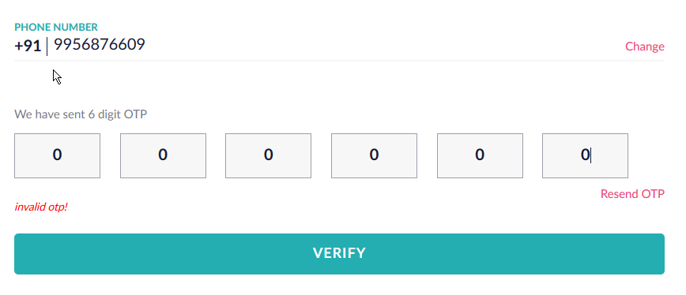

No Rate Limit leads to Account takeover(ATO)
- We will send x number of simultaneous requests to the server & server will act on each request.
- Thus by sending x number of right OTP Token, Password we can successfully crack the code.
- No validation and limiting the requests & taking decisions is dangerous.
- Example 1 //basically we are bruitforcing here and the application is not stooping us due to no rate limit.
- Visit : https://www.netmeds.com/customer/account/login (Patched)
- Assuming that you have already created an account
- Login with wrong OTP and start BurpSuit
- 
- Burpsuit will intercept

Send it to repeater, intruder, intercept the response- Go to intruder->Positions->Clear
- Select OTP area and Add

- Go to Intruder->Payloads->Payloadtype(Numbers)
- Give number in range

Uncheck the URL encoding- Start the attack
- For Correct OTP it will give response. Copy the response
- Start the intercept on and paste the response
- Example 2 //basically we are bruitforcing OTP here and the application is not stooping us due to no rate limit.
- Visit : lemonroad //but now its been patched